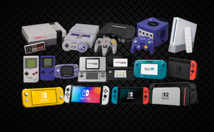

Muito antes dos videogames
Fundada em 1889 no Japão, a Nintendo começou produzindo cartas de baralho. Ao longo do tempo, experimentou diferentes áreas de entretenimento antes de entrar no mercado eletrônico.
A HISTÓRIA DA NINTENDO
Uma marca conhecida pela criatividade, por personagens memoráveis e por formas diferentes de jogar.

Fundada em 1889 no Japão, a Nintendo começou produzindo cartas de baralho. Ao longo do tempo, experimentou diferentes áreas de entretenimento antes de entrar no mercado eletrônico.
Com consoles como NES, Super Nintendo, Nintendo 64, Wii e Nintendo DS, a empresa apresentou jogos e formas de interação que marcaram várias gerações.
A família Nintendo Switch combinou console doméstico e portátil em um mesmo sistema, mantendo o foco em experiências acessíveis e multiplayer.